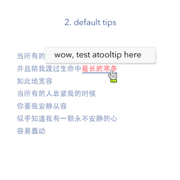

v1.6 changes
* keep Lightweight
* add one display mode,could display html content and keep alive until you close by action that can be defined
* simple css style
* there must have 'id' in the element(just for unique or even different css style)
ScreenShot
- 

Demos
- Normal Tooltip - This is a normal tooltip with default settings.
- Follow mouse Tooltip - This is a tooltip that follow mouse
- closeBlur Tooltip - This is a closeBlur tooltip
- On Click Tooltip - This is a click activated tooltip with content passed in from 'tipContent' param
- Callback Tooltip - This is a click activated tooltip with callback functions.